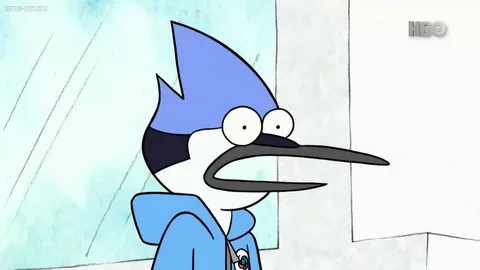

23-летняя голубая сойка, главный герой мультсериала, лучший друг Ригби. Они оба работают в городском парке, но очень ленивые и редко выполняют свои обязанности. Мордекай более добросовестный, пытается выполнять свои рабочие обязанности, но часто попадает в глупые ситуации, пытаясь соперничать с Ригби. Иногда эти ситуации случаются исключительно по вине Ригби, хотя достаётся им поровну. Почти во всем Мордекай побеждает Ригби, особенно он любит играть в «Кулаки», зная, что маленький и слабый Ригби точно проиграет и Мордекай всегда бьёт Ригби по плечами и его плечи ломаются. Мордекай всегда пытается найти выход из безвыходной ситуации. Он тайно влюблён в красногрудую малиновку Маргарет, официантку в местном кафе. После того, как Маргарет уехала, Мордекай долго забывал её, а потом начал встречаться с Си-Джей. У него две белые полосы на крыльях и две чёрные на пальцах. В 33-й серии третьего сезона сознаётся, что спит на сдвоенной кровати, он забрал кровать Ригби себе и сделал из двух одну. Ригби об этом не знает и спит на батуте. В конце 8-го сезона становится художником и встречает свою будущую жену наполовину летучую мышь.